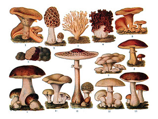
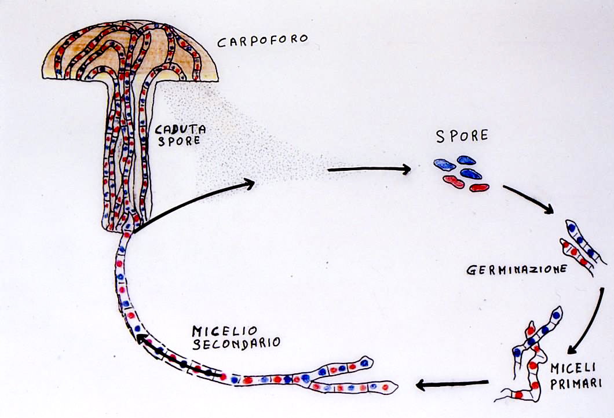
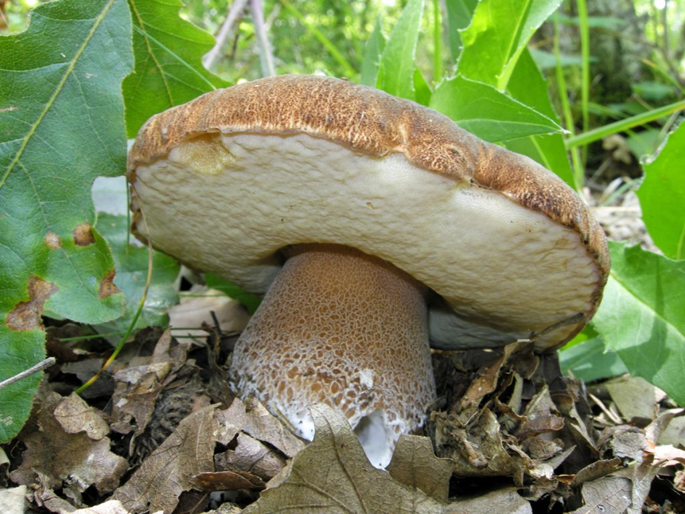
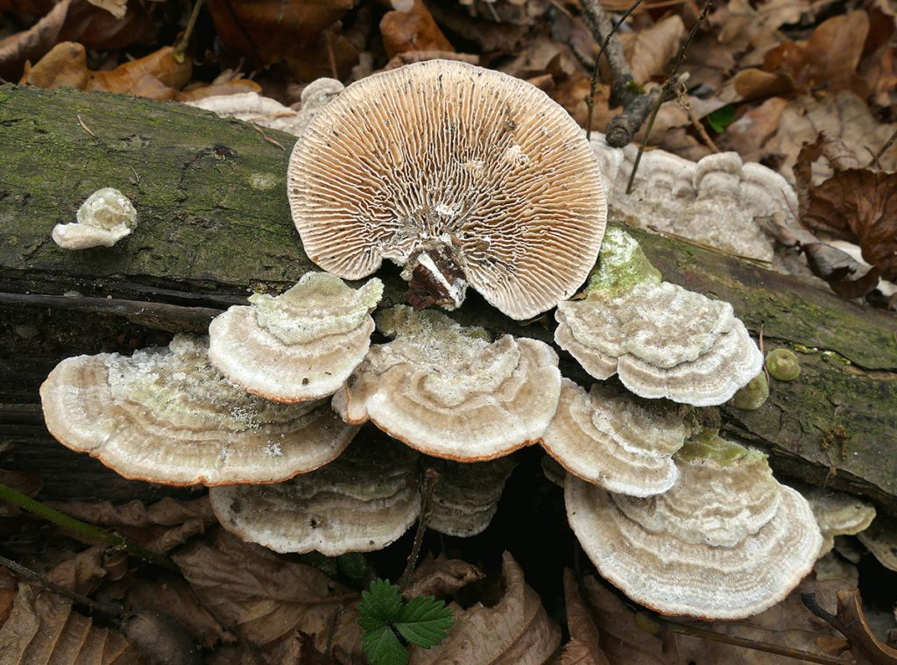
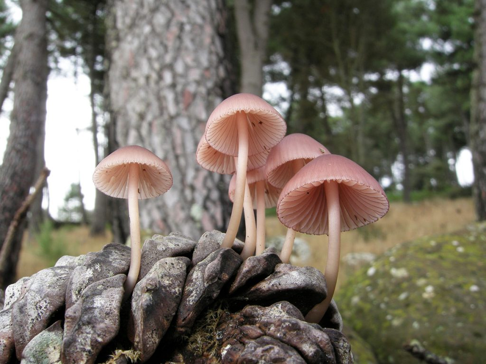
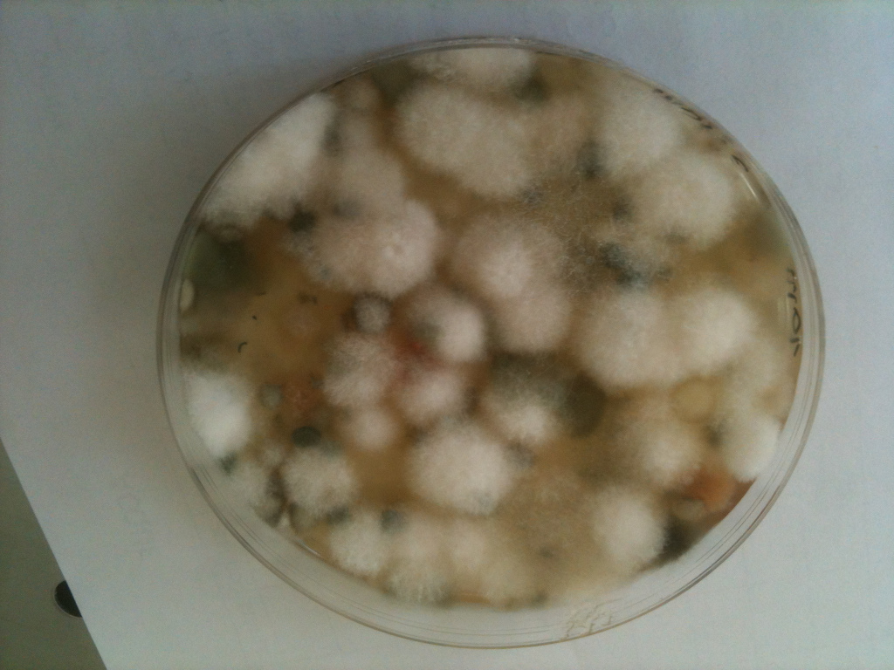
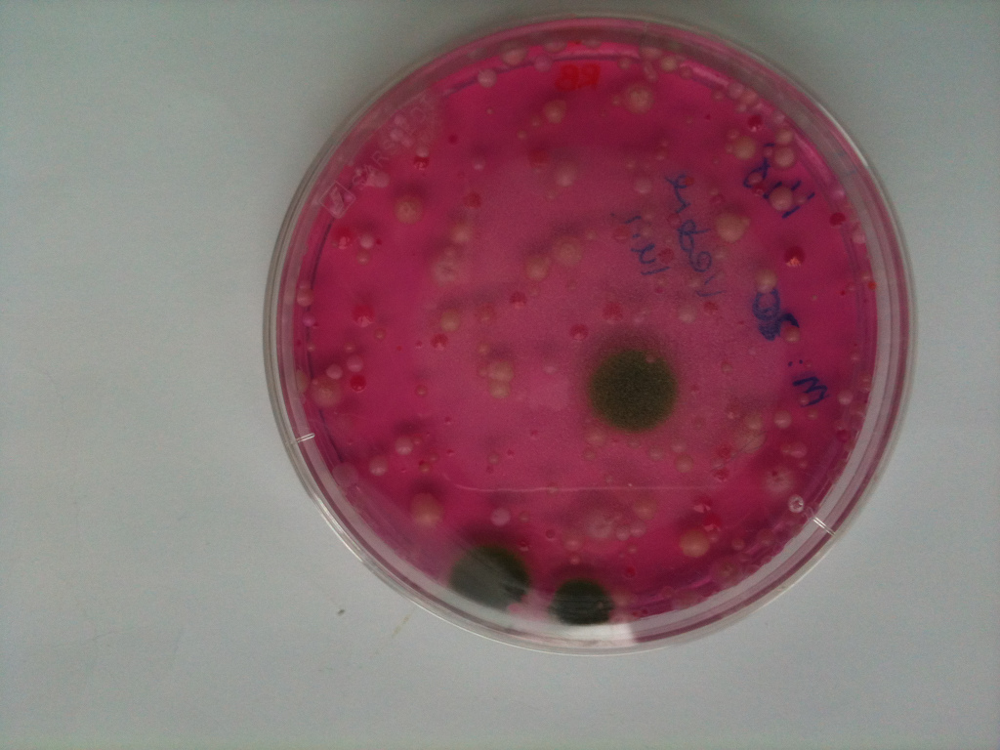

Dimensioni dei funghi

La nascita e la velocità di crescita dei funghi dipende da
alcuni aspetti esterni, che sono:
- tipo di fungo
- la quantità d’acqua
- la temperatura dell’aria e del suolo
- l’umidità dell’aria e del suolo
- il tipo di terreno
- la luce ed il vento
Al variare di questi fattori il ritmo di crescita può diminuire o aumentare.
La velocità di crescita aumenta in condizioni di elevata quantità d’acqua ed umidità.
Anche la temperatura più mite incoraggia la crescita dei funghi, infatti è più facile trovare funghi in collina piuttosto che in montagna. Il forte vento invece ne rallenta la crescita, in alcuni casi estremi la può anche fermare del tutto.
Per esempio il porcino, se la temperatura e l’umidità dell’aria e del terreno sono a livelli ottimali, ed il vento è quasi assente, ha bisogno di circa 4-5 giorni per crescere dalla dimensione di 1 cm a dimensioni di 10-15 cm in collina. In montagna invece i tempi sono più lunghi e variano dai 10 ai 15 giorni per arrivare alla stessa dimensione. La causa è dovuta semplicemente al fatto che in montagna le condizioni sono più sfavorevoli, in particolare per quanto riguarda la temperatura.
Al regno dei funghi appartengono organismi unicellulari e pluricellulari con struttura vegetativa organizzata in cellule filamentose: ife o micelio primario. A differenza delle cellule vegetali, che hanno una parete costituita da cellulosa, la parete cellulare dei Funghi è costituita da un altro polisaccaride: la chitina, polimero della N-acetil-glucosamina, presente anche nell'esoscheletro degli Artropodi (insetti, ragni, crostacei). La chitina, rispetto alla cellulosa è molto più resistente alla degradazione da parte dei microbi, al caldo, al freddo e alla siccità. Le cellule che costituiscono le ife possono essere mono o polinucleate e possono essere divise da setti. La presenza o meno dei setti è una caratteristica distintiva di alcuni gruppi di funghi rispetto ad altri. Negli Zigomiceti, infatti, le ife non sono settate, cosa che invece è presente negli Ascomiceti, nei Basidiomiceti e nei Deuteromiceti.
Il setto può essere:
- intero, senza poro
- perforato, con poro centrale che consente il passaggio del protoplasma e di organi cellulari
- a Barile, con poro (Doliporo) circondato da un bordo di fibre di chitina con struttura cilindrica
Le ife si sviluppano all'interno del substrato di crescita fino a formare un reticolo intrecciato detto micelio. Una delle caratteristiche di alcuni funghi è quella di emettere luce, come ad esempio la Clitocibe dell'ulivo: Omphalotus olearius , che si illumina per via delle lamelle bioluminescenti.
...

I funghi hanno una struttura filamentosa, con cellule tubolari (ife) situate nei filamenti ramificati e intrecciati fra loro che formano il micelio. Le parete cellulari delle cellule sono rivestite di chitina che permettono al fungo di proteggersi dai microbi.
Il micelio è il corpo vegetativo ed è la parte fondamentale di ogni fungo. Esso si sviluppa nel terreno, cresce e produce il corpo fruttifero, la parte che noi vediamo e intendiamo come “fungo”. Il corpo fruttifero può avere differenti forme, di solito è composto dal gambo e dal cappello.
Il gambo serve a portare fuori dal terreno la struttura all’interno della quale si formano le spore. Ha forma cilindrica e carnosa e con struttura fibrosa o carnosa, talvolta elastica. La superficie può essere liscia, reticolata, vellutata, squamata.
Il cappello è la parte superiore e può avere diverse forme (convesso, piano, concavo, imbutiforme) e può cambiare forma durante il ciclo vitale. La parte esterna del cappello si chiama margine e la cuticola che riveste il cappello può essere spessa, sottile, separabile o meno, lacerata, squamata. Il colore del cappello, invece non è sempre uguale perché cambia in base al microclima. L’imenoforo è la parte situata sotto il cappello, può essere lamellare o spugnoso e serve a contenere le spore (organi di riproduzione).

I funghi si possono riprodurre in maniera asessuata o in maniera sessuata tramite la produzione di spore dette endospore. Le spore possono essere prodotte in maniera sessuata, attraverso la fusione di due o più nuclei, o asessuata, senza che ciò avvenga. A seconda del phylum cui appartengono i funghi che le producono si parlerà di ascospore (Ascomycota), basidiospore (Basidiomycota) o zigospore (Zygomycota).
In questo articolo vogliamo rispondere ad una delle domande che ci è stata fatta spesso dai nostri lettori ed appassionati del settore, ovvero, come vivono e come si riproducono i funghi?
Conoscere con precisione l’ecologia dei funghi ci consente di cercarli nell’habitat appropriato, diverso e peculiare per ogni specie presente nel nostro ecosistema. Singolare il loro sistema riproduttivo, in alcuni casi tanto simile a quello del regno animale.
Ecologia dei funghi
I funghi, a differenza delle piante, sono organismi eterotrofi, quindi sopravvivere e potersi nutrire necessitano dell’apporto di sostanze organiche esattamente come gli animali. In base alla modalità con cui si procurano queste sostanze i funghi vengono suddivisi in tre gruppi principali:
Funghi simbionti

Sono funghi il cui micelio si associa alle radici delle piante attraverso un contatto avvolgente chiamato appunto micorriza. Da questa associazione entrambi gli organismi, pianta e fungo ricevono un vantaggio: la pianta riceve acqua e sali minerali dal micelio fungino, che funge quasi da prolungamento del proprio apparato radicale. Il fungo riceve invece dalla pianta zuccheri e altre sostanze organiche necessarie per la propria sopravvivenza. Questo tipo di funghi sono estremamente importanti per il benessere e l’equilibrio del bosco. Tra i principali funghi simbionti ricordiamo quelli del genere Russula, Amanita e la maggior parte delle Boletaceae.
Funghi parassiti

Sono quei funghi che si alimentano a spese di organismi viventi, soprattutto piante, determinando uno svantaggio o addirittura la morte dell’ospite sul quale crescono. Questi funghi attraverso il proprio micelio producono particolari enzimi in grado di degradare i principali costituenti del legno (cellulosa e lignina) per poterli così assorbire. Malgrado i loro ruolo di “killer” anche questi funghi sono importanti per l’ambiente in quanto, attaccando soprattutto piante deboli o malate, permettono una selezione naturale che permette agli esemplari più resistenti di riprodursi. Tra i principali funghi parassiti ricordiamo il chiodino (Armillaria mellea), il piopparello (Cyclocybe aegerita) e la maggior parte delle Polyporaceae.
Funghi saprofiti

Questi funghi vivono degradando sostanza organica vegetale già morta costituita ad esempio da foglie e legno, decomponendole in materia inorganica nuovamente disponibile per gli organismi autotrofi, cioè le piante. Anche la maggior parte dei funghi parassiti sono in grado di comportarsi da saprotrofi una volta portata la pianta ospite alla morte. Questi funghi svolgono un ruolo essenziale di “pulizia” in quanto senza la loro azione il materiale organico delle piante morte continuerebbe ad accumularsi rendendo di fatto impossibile lo svolgersi della vita. Moltissimi funghi appartenenti alle più svariate famiglie hanno questo tipo di ecologia, dai funghi prettamente lignicoli ai funghi cosiddetti di lettiera, che vivono cioè degradando lo strato di foglie e detriti che si accumula sul suolo dei boschi.
E QUESTO DOVE ANDREBBE? NELL'INDICE???
Le micorrize

Muffe e lieviti raggruppano un insieme di specie diverse tra di loro,
alcune delle quali patogene per l’uomo, altre no. Basti pensare
al lievito Saccaromyces cerevisiae utilizzato nei processi di
panificazione oppure alle muffe del gorgonzola, importanti per conferire al formaggio
un gusto particolare. I lieviti si sviluppano in presenza di zuccheri e sono importanti
nel settore alimentare perché fermentano i carboidrati producendo alcool e anidride
carbonica. Vengono perciò utilizzati nella produzione del vino e della birra e
per far lievitare il pane: infatti, l’anidride carbonica prodotta è
un gas e fa gonfiare la pasta del pane, della pizza e di tutti gli altri alimenti
lievitati (brioches ecc…).

Per quanto riguarda le muffe, alcune specie presenti
sulla pelle dei salami svolgono un ruolo fondamentale nella maturazione
e nell’affinamento degli insaccati intervenendo in diversi processi,
come la regolazione del grado di umidità, la disacidificazione e
la proteolisi , e influenzano notevolmente la formazione del gusto del
prodotto. Però non tutte le muffe provocano alterazioni gradevoli dei cibi;
ad esempio muffe del genere Penicillium si ritrovano spesso
sugli agrumi (arance, limoni) dove formano una patina blu-verdastra, mentre nei
cereali e nelle farine si può ritrovare l’Aspergillus.
Le specie appartenenti al genere Thamnidium si rinvengono
frequentemente sulle carni refrigerate dove determinano fenomeni di ammuffimento.
Torna all'inizio
Torna a "I cinque regni degli esseri viventi"